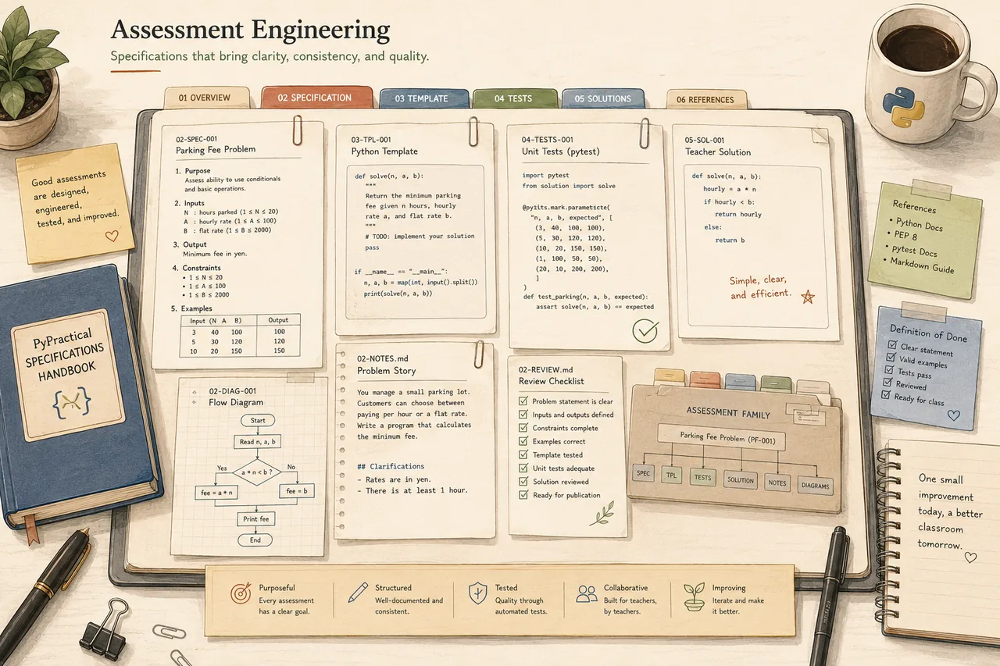

Specifications
The contracts behind every assessment.
Consistency reduces cognitive load. These specifications define exactly how every PyPractical assessment is structured — so any teacher can read, use, and adapt one with confidence.

Choose a document
Read any specification
Select a card to load the full document — rendered live from the repository.
Live document
Specification
Specifications meet standards
Style and scoring standards keep every assessment consistent and fair.